CS 184: Computer Graphics and Imaging, Spring 2019
Project 2: Mesh Edit
Z Wang
This content can be found on my Github Page: zchickenwang.github.io.
Overview
Polygon meshes are used to explicitly define shapes in space, and are frequently used as a model between the scanning and displaying phases of real-world objects (think Google Earth, 3D printing). Why meshes? Well, their explicit nature makes interacting with meshes a little more modular, and moreover, both the topology and geometry of the mesh can be adjusted according to resolution, POV, and error-correction. To store meshes on the computer, we'll use a 'half-edge' structure which adds some redundancy, but makes modifying and traversing the mesh fairly simple (as well as providing spatial locality).
At first, we'll focus on the problem of smooth curves. In particular, we'll implement Bezier curves and surfaces. Next we'll move onto aspects of mesh subdivision, like area-weighted normals, edge manipulation, and upsampling.
Section I: Bezier Curves and Surfaces
Part 1: Bezier Curves with 1D de Casteljau Subdivision
De Casteljau's algorithm is a way to calculate a bezier curve given control points. At each step, the algorithm finds the point along each line segment where the segment breaks into 2 segments whose lengths are proportional to t:1-t (where t is a paramter ranging from 0 to 1). In this way, each step reduces the number of points by 1--if we start out with 3 points, then there are 2 segments connecting the points, and these segments produce 2 points for the next iteration.
The algorithm runs until there is only 1 point remaining. Then, this point represents a point along the resulting bezier curve for a given value of t. If we sample values of t, we can find their corresponding positions along the curve.
In our implementation, we'll simplify the logic by writing a method which executes one step of de Casteljau's. We'll keep track of the points resulting from each step of the algorithm, so that a call to this method will just look up the most recent step and iterate from there. Note that this takes up extra space (quadratic w.r.t. the number of control points).
Due to the systematic nature of this algorithm, it is possible to evaluate the curve in much less time by precomputing algebraic formula's that represent all the iterations needed in de Casteljau's to find bezier curve points. While easy parellization and simple math make de Casteljau's very efficient, curves with higher orders of control points or repetition may benefit from an algebraic approach.
Results
Here are some results we get. Images a-f represent consecutive steps in de Casteljau's for a 6-point bezier curve. In each step, we look at the previous step's segments, and find points along those segments that are t'th of the way along the segment. Image g displays the curve we get when we vary t from 0 to 1.
In image h, we see what happens when the control points are moved. Then, image i reflects this modified curve evaluated at a different t value.
|
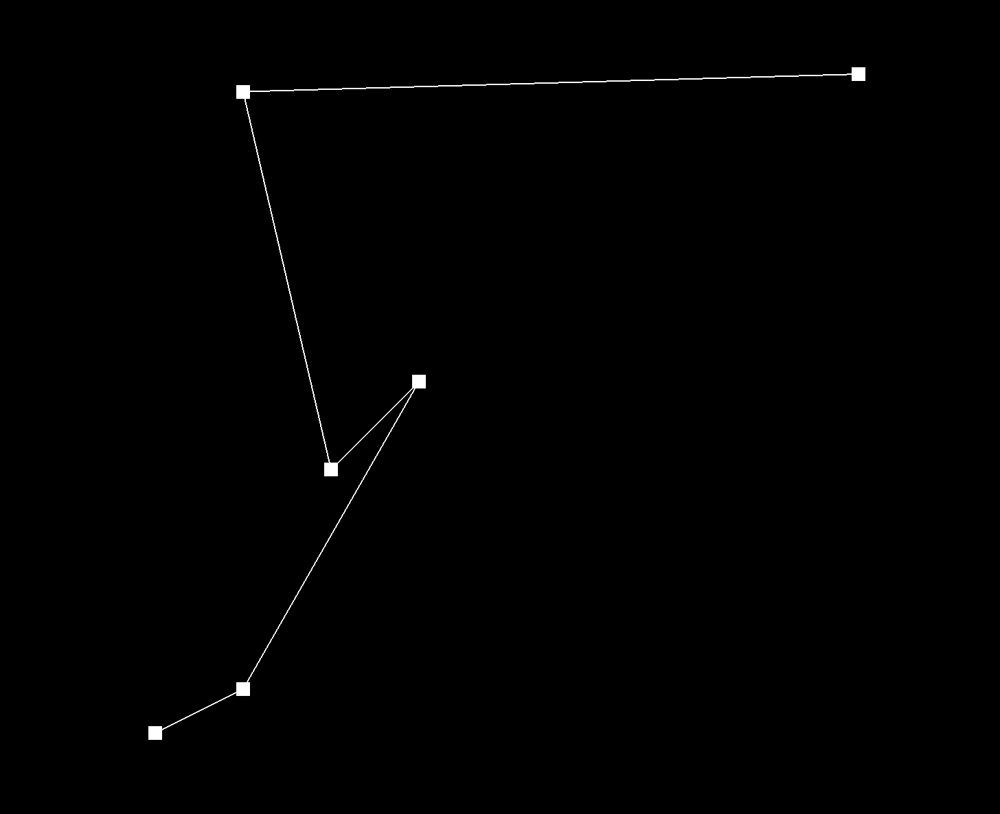
1a. Iteration 0: 6 control points.
|
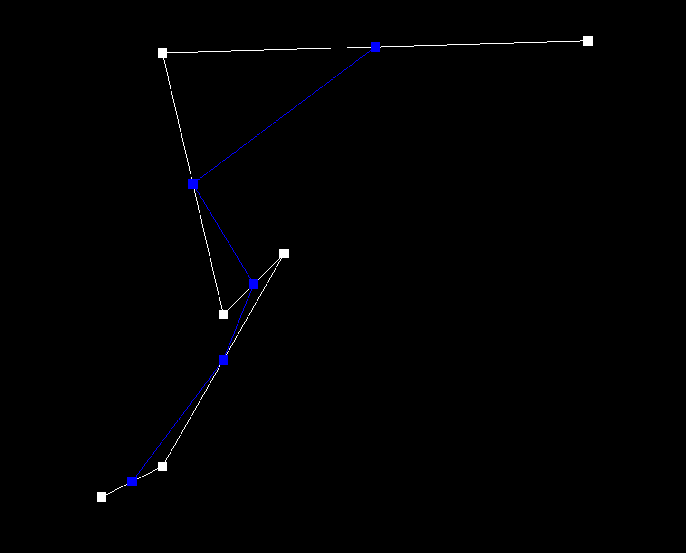
1b. Iteration 1: 5 points.
|
|
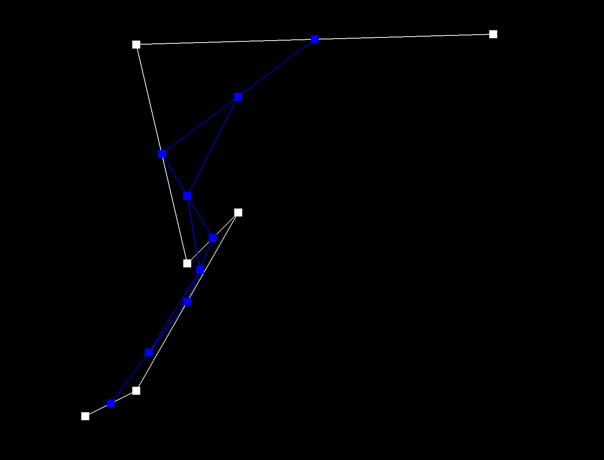
1c. Iteration 2: 4 points.
|
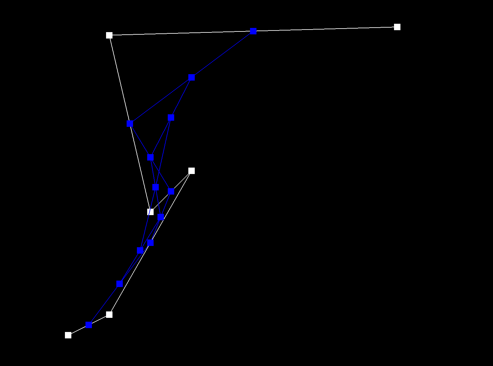
1d. Iteration 3: 3 points.
|
|
1e. Iteration 4: 2 points.
|
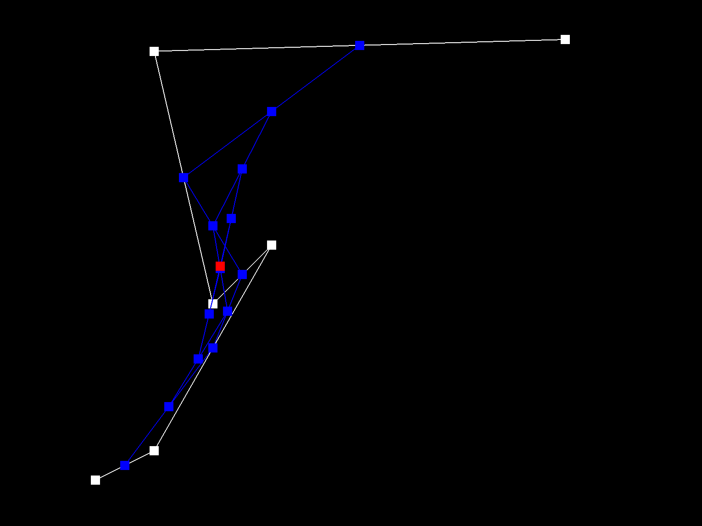
1f. Iteration 5: 1 point!
|
|
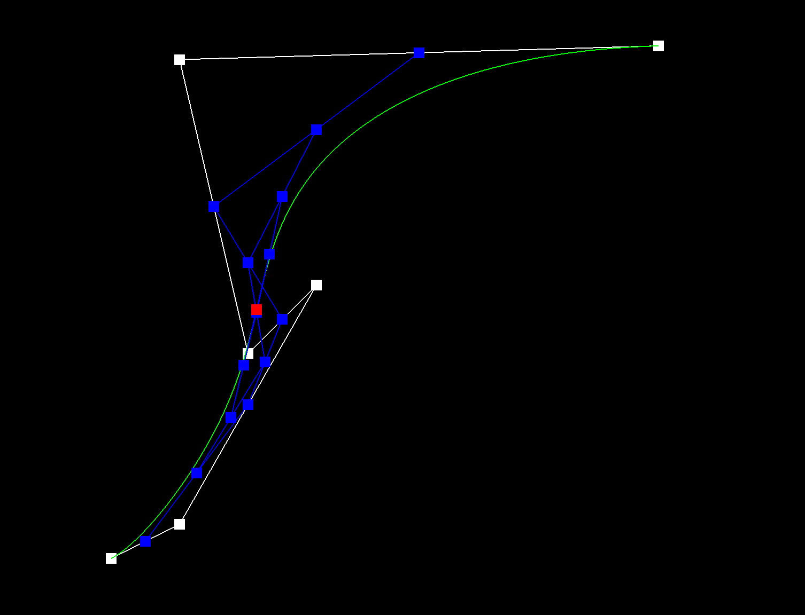
1g. Curve obtained from varying t.
|
 1h. Different control points.
1h. Different control points.
|
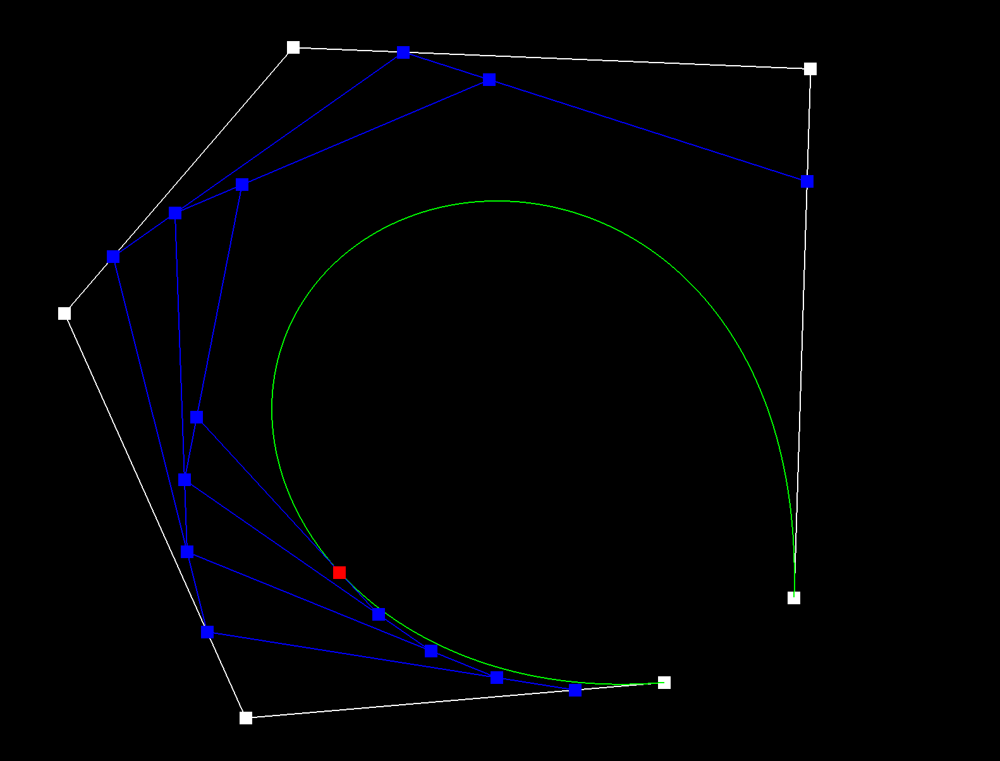
1i. Different t value.
|
Part 2: Bezier Surfaces with Separable 1D de Casteljau Subdivision
How can we extend bezier curve evaluation to 3 dimensions, where we're building smoothly-curved surfaces?
In this 3D case, we'll use a standard 4x4 array of control points (16 total). We'll also need 2 t parameters representing 2 axes of variance--let's call these u and v.
Algorithm
The algorithm itself is fairly simple--we first split up the array of control points into rows of 4. For a given u and v, we'll evaluate the bezier curve points for each row using u. Since we're back in 2D land, each row's curve can be calculated with de Casteljau's! Then we'll take these 4 points (1/row), and evaluate the columnwise-direction bezier curve using v (also using de Casteljau's). As we vary u and v, we'll get points along this bezier surface.
Results
Here's a bezier-surface-composed image of a teapot:
|
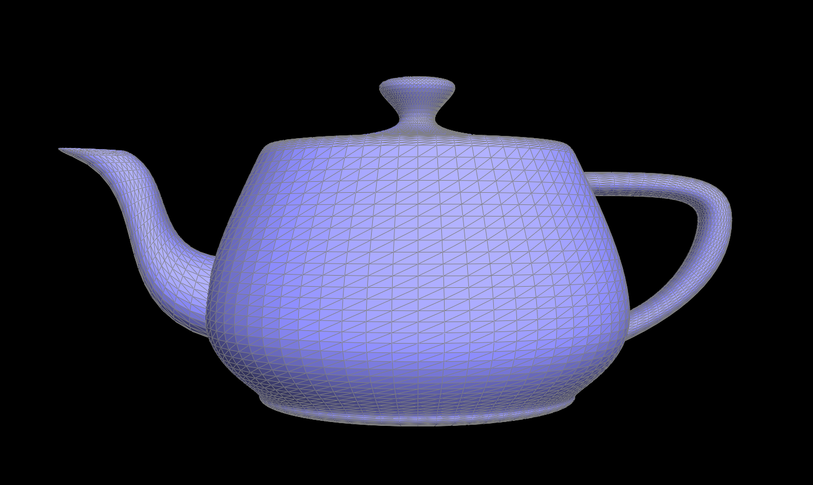
2a. Hey Teapot.
|
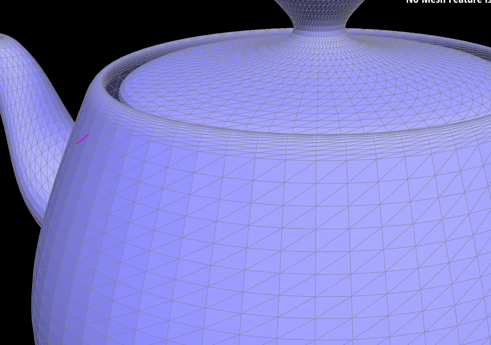
2b. Nice Curves.
|
Section II: Loop Subdivision of General Triangle Meshes
Part 3: Average Normals for Half-Edge Meshes
Now we'll switch topics a little to meshes. If we have a mesh of triangles that defines a surface, then how can we shade the surface? A naive approach is flat shading, or calculating the normal for each triangle and using that to determine the shading over that face. In this way, each triangle has a single color, with no smoothing-out of differences between adjacent triangles. Ew!
A Better Way
The issue with flat-shading is that it ignores discontinuities at triangle vertices, where the surface is not flat. Instead, we can approximate the normals at each vertex using its surrounding faces! Then, we'll be able to render meshes more smoothly (for instance, we can calculate the normal at each point by interpolating across the normals of its triangle's vertices).
The actual implementation involves using the half-edge structure to our advantage. Starting at a vertex, we can iterate over adjacent faces by traversing each face's half-edges, then switching to a twin on the next face. Finding the normal for a face just means taking the cross-products of its edges. Finally, we'll keep an aggregate sum and count of face normals, and average over these to get an approximate vertex normal.
Results
Here we have mesh renderings of the teapot, toggling normal-averaging.
|
3a. Face normals.
|
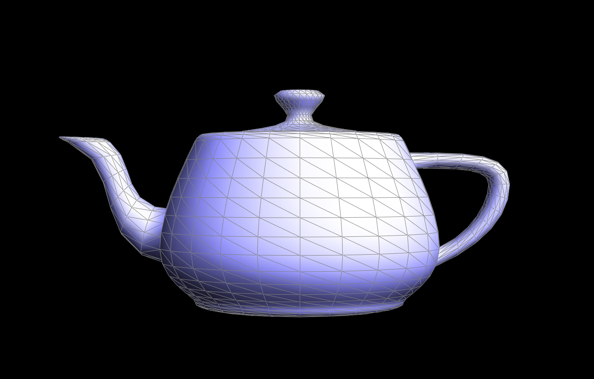
3b. Average vertex normals.
|
Part 4: Half-Edge Flip
Okay, so we can render a simple mesh. What if we now wanted to manipulate it, for example by increasing the resolution? Just taking more samples on the existing mesh would not change the geometry of the final shape, so we need to change the mesh somehow.
Before we consider upsampling, we'll need basic functions to adjust the mesh structure. Two essential functions are flipping and splitting edges.
Edge Flipping
Each edge lies between two faces, or triangles for a triangle mesh. Then, flipping an edge means making it connect the vertex on each triangle which is not already touched by this edge. The images below may give a clearer explanation, we're essentially switching the axis of the edge.
Note that flipping doesn't increase the number of edges, vertices, or faces. Our implementation will borrow from the suggestion of listing out each half-edge, edge, vertex, and face adjacent to the given edge. We'll then redefine each variable according to a world where the edge is flipped. On the bad side, this involves some detailed, systematic work of listing out each variable which one thinks could be easily done programatically instead. On the good side, we ensure completeness, and gain a better understanding of the data structures.
Fortunately, this robust approach worked the first time, so no cool debugging tales here.
|
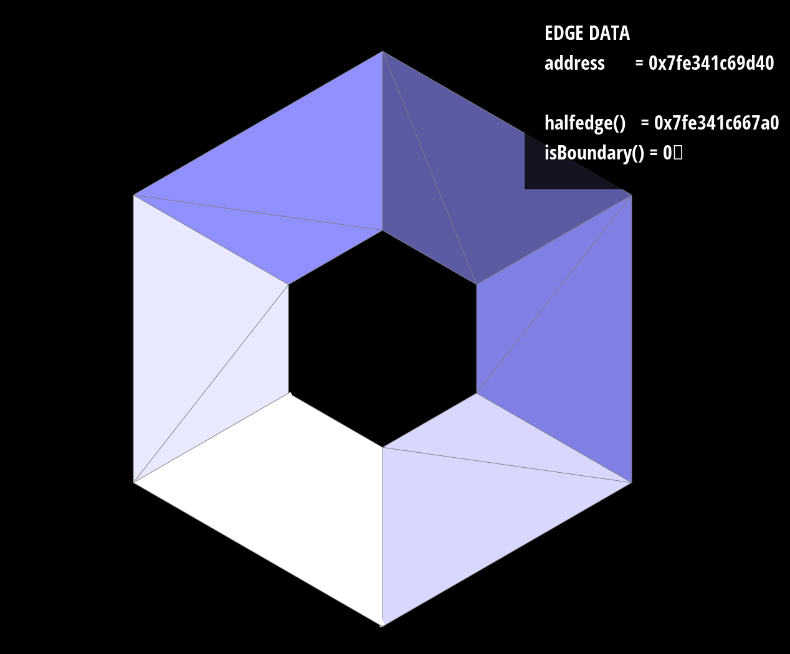
4a. Look, I just flipped the switch.
|
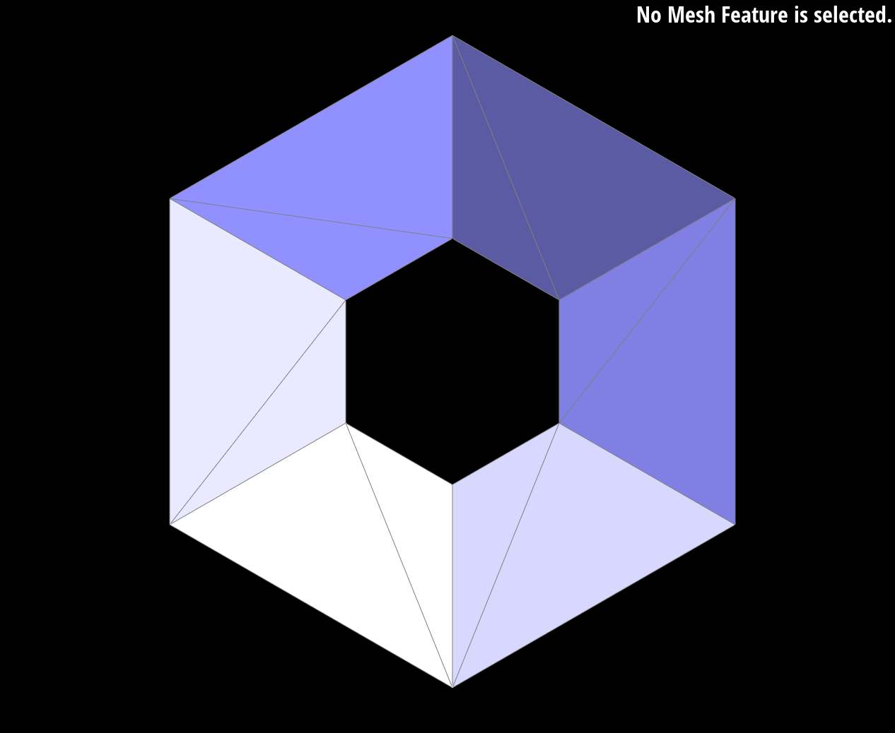
4b. (flip flip).
|
|
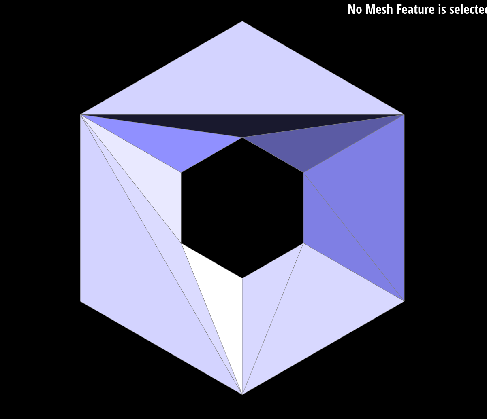
4c. More flips.
|
Part 5: Half-Edge Split
While flipping edges changes the structure of the mesh, it doesn't add new triangles (which is intuitively what we want when upsampling). Thus, we introduce edge splitting.
With edge splitting, we keep the original edge, while also adding the flipped version as a new edge. Note, however, that because an edge and its flipped version intersect, that splitting results in 2 more triangles. Moreover, the original edge gets split into 2 (similarly for the new, flipped edge).
Our implementation here follows the same approach as with edge flipping: we first list out all variables involved, adding new variables for new faces, edges, and vertex. Then we imagine this area of the mesh with a split edge, and reassign all the variables accordingly. This approach worked the first time here as well (props to the method).
The images below describe edge splitting as well as a combination of flips and splits.
|
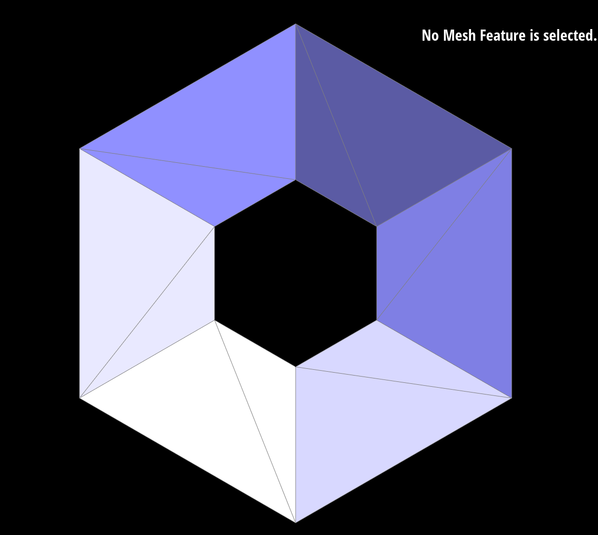
5a. Edge.
|
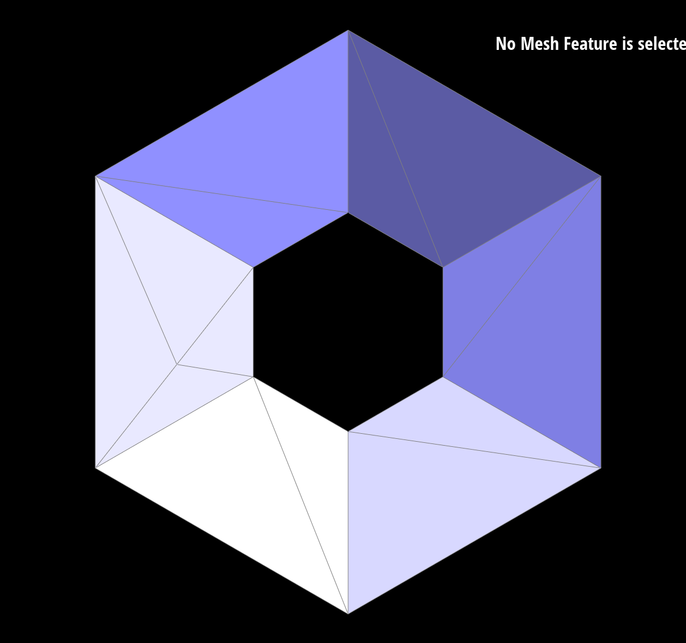
5b. Split.
|
 5c. Cow.
5c. Cow.
|
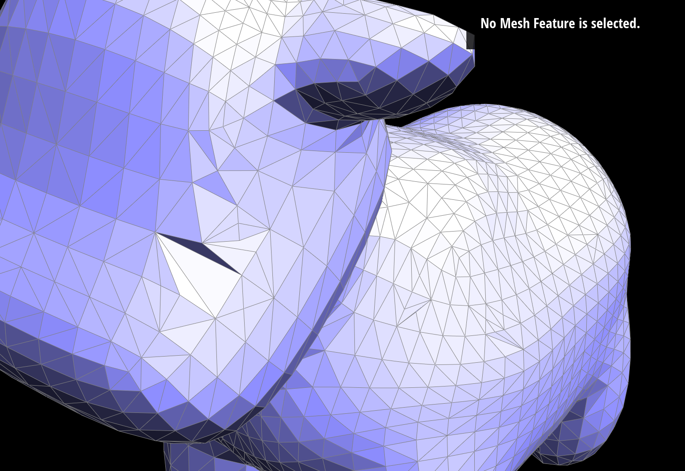
5d. Cow with splits and flips.
|
Part 6: Loop Subdivision for Mesh Upsampling
Mesh upsampling involves two steps: splitting and flipping. First we split each edge, in any order. However, this deregularizes the mesh, and the new triangles will lose the original mesh's consistent shape and size. Flipping some edges, then, returns to the mesh a consistent triangle shape (specifically, we flip edges that bridge between a new and old vertex).
So we've split each triangle into 4 smaller triangles. While this does change the topology of the mesh, it doesn't change the geometry! Since new vertices are placed according to existing vertices, the overall shape will not change!
To deal with this, we must reposition all the vertices, both old and new. Since loop subdivision is an approximation-based approach, the control cage of old vertices is not necesarily maintained after subdivision--in fact, the object often shrinks in size.
Actual implementation was made much easier by a suggested approach. We first calculate the new positions of old and new vertices, storing them in an auxiliary field as we require all the original vertex positions in order to calculate each new position. Then we can split each edge, and flip the ones between and old and new vertex (we can distinguish between them using another boolean field). To make sure we only split old edges (and not recursively ones we have just created), we can either preload all the old edges, or mark edges as old or new. The former approach can fill up memory, but reduces the need for a temporary field. In the end, we can reposition all the vertices using their previously-saved values. No interesting tricks here, just following the well-worn path.
Results
Here's a series of images of a Torus undergoing upsampling.
|
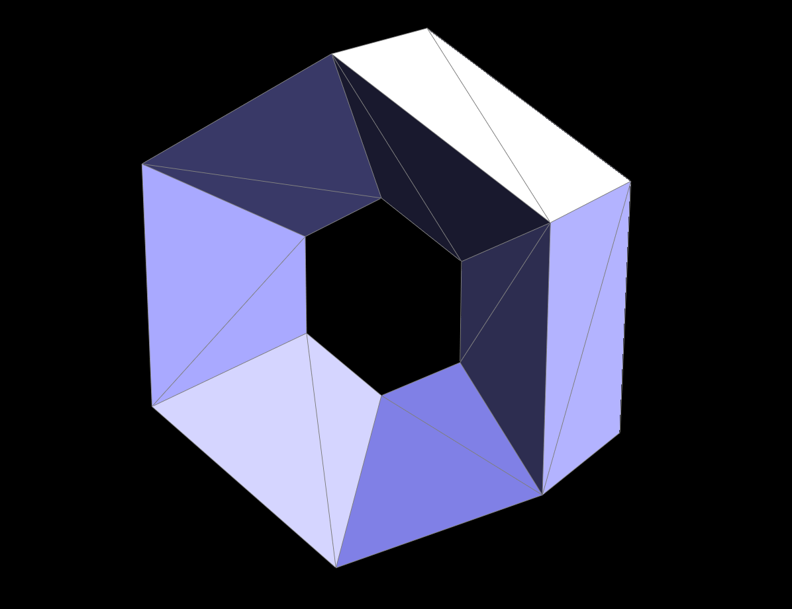
6a. Torus.
|
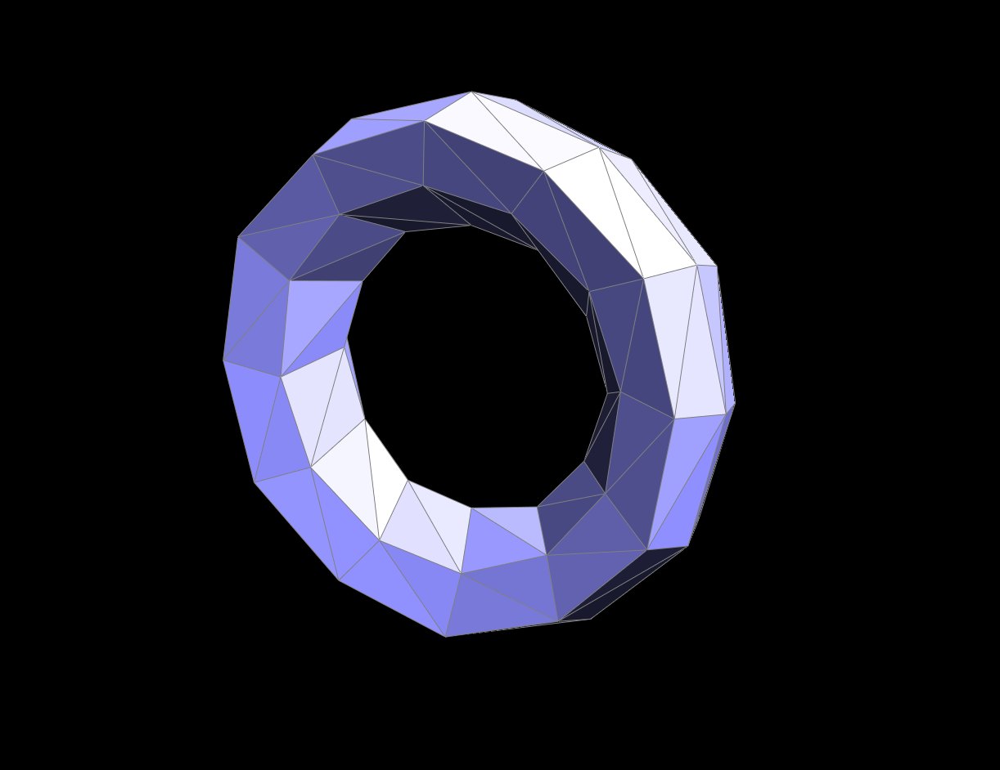
6b. Upsampled Torus.
|
What Happens to Sharp Edges and Corners
Due to its approximative nature, Loop Upsampling does not preserve original vertices. This means that the shape becomes more 'rounded', and sharp features will be smoothed out. However, in the images below, we try to preserve a sharp edge of the original torus by repeatedly splitting this edge and the edges on its adjacent faces. This does keep the edge sharp, but distorts the geometry local to that edge.
|
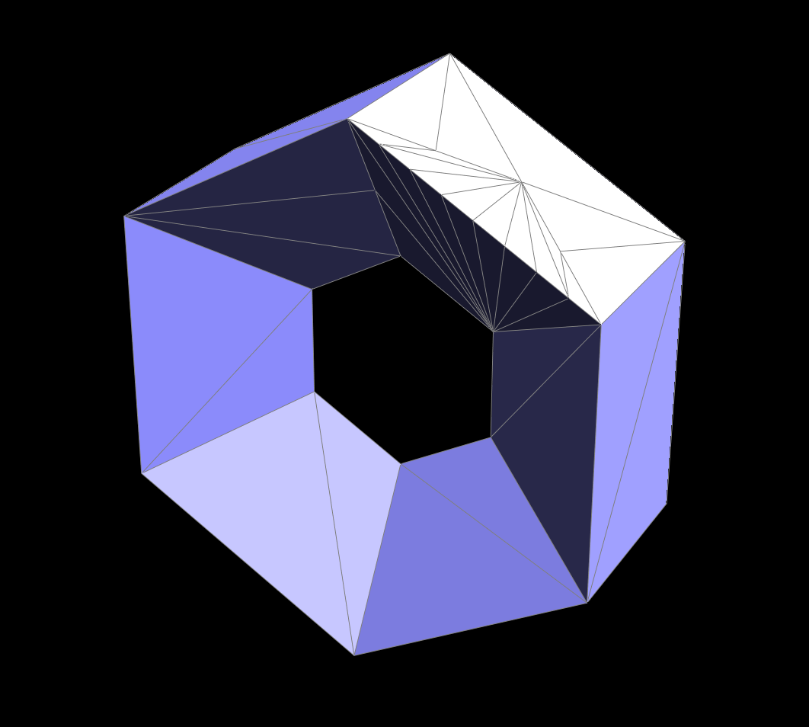
6c. Torus with edge splits.
|
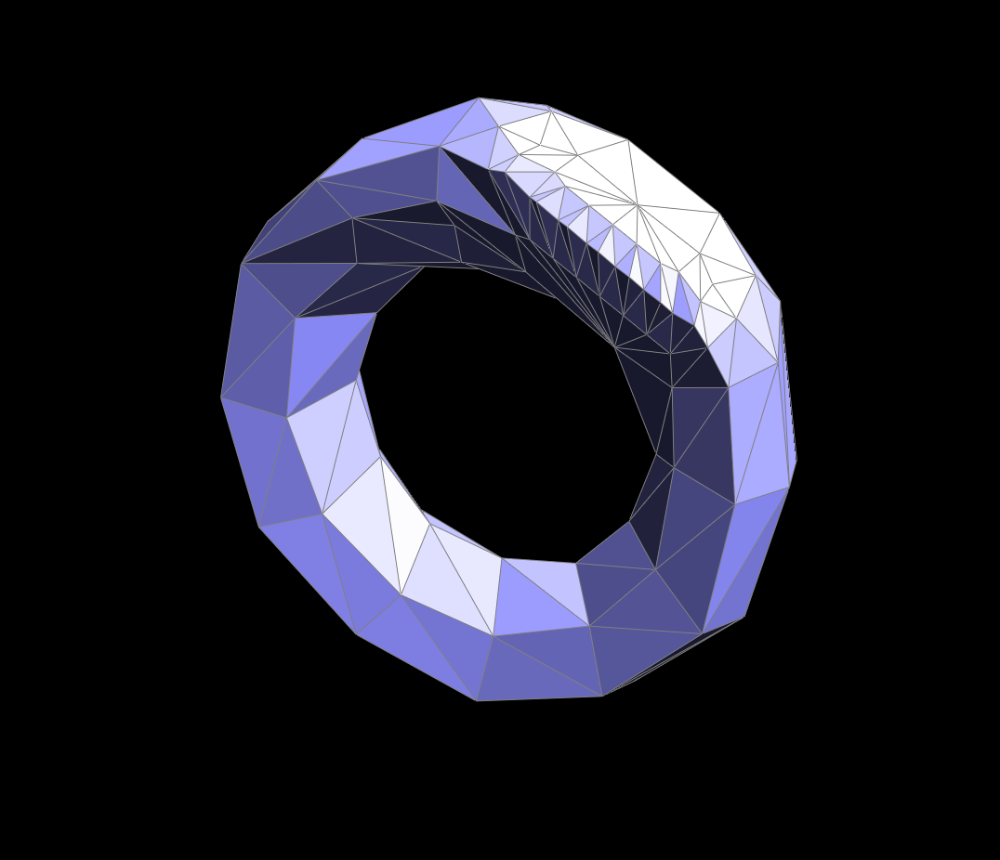
6d. Upsampled--notice the sharpness is preserved.
|
Loop Subdivison and Asymmetry
From continuously upsampling the cube, we can notice a sort of assymetric deviation. The upsampled cube is no longer symmetric, and contains some odd protrusions. What happened?
Well, if we examine the original cube, we'll see that each face is split along a single diagonal. This introduces, in a sense, asymmetry which is augmented when we apply Loop Upsampling (the original diagonal edge lines will remain unchanged, but there won't be a corresponding continuous line of edges along the other diagonal).
See below for what happens when we first split each face of the cube into 4, totally symmetric triangles first. The upsampled cube is symmetric!
 6e. Cube.
6e. Cube.
|
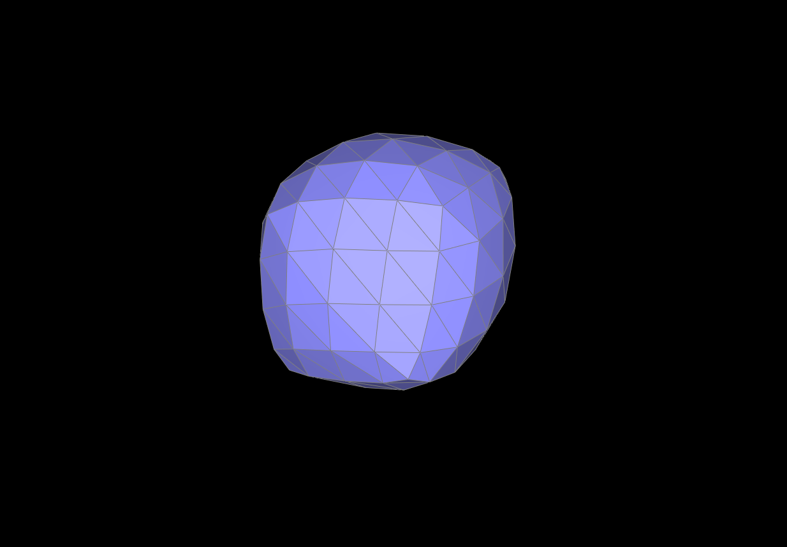
6f. Upsampled--notice the asymmetry.
|
|
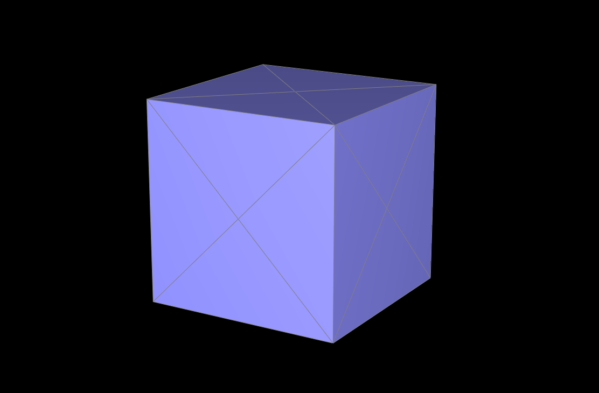
6g. Cube with split faces.
|
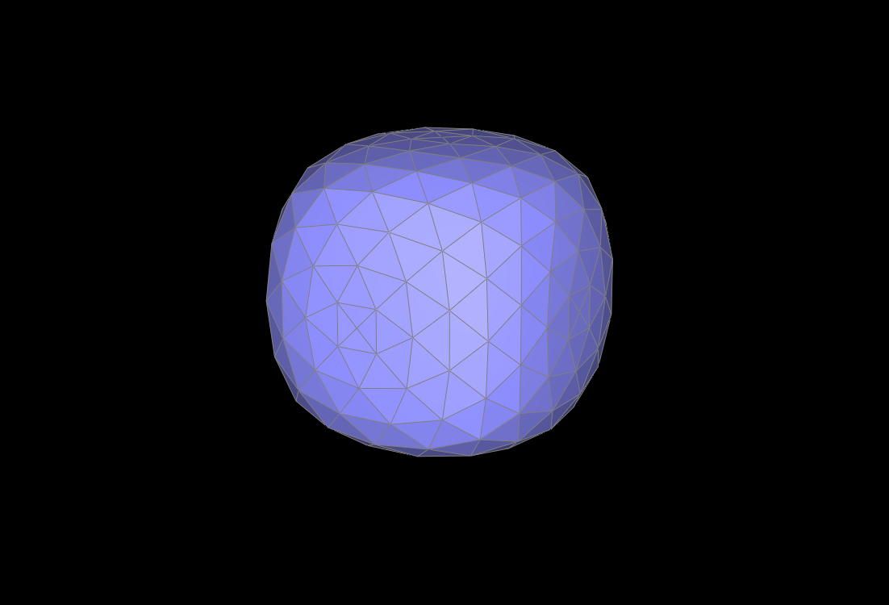
6h. Upsampled--Mmm...
|